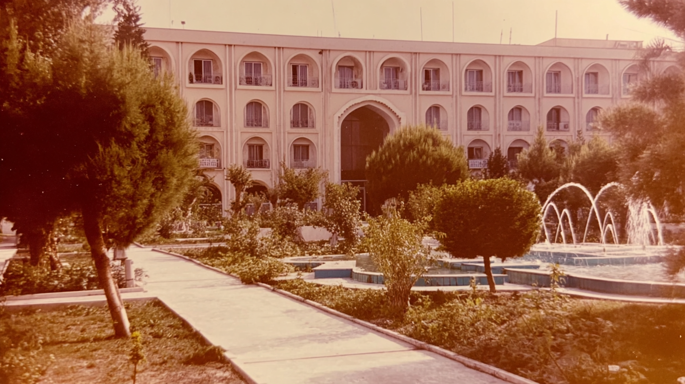

Low buildings and rooftops frame a distant domed mosque against a pale, dusty sky
A shaded garden canal covered with leaves, framed by dense trees and stone edges.
Palm trees frame a multi-story building with arched windows and a tall central entrance.
A brick walkway winds through a quiet, tree-filled park with trimmed shrubs.
vintage photo of hotel, imperfect composition, cinematic style, high quality and texture, 35mm kodachrome, muted natural colors, low contrast grading, soft highlights, hazy atmosphere, arid heat. Light film grain, organic texture, low digital sharpness, no vivid colors. Shot like contemporary cinema, realistic, alive, subtle faded blurry shutter motion.
analog photograph, town square with fountain, soft desert haze in the air, warm sepia color cast from aged film, slight overexposure in the sky, subtle film grain and dust specks, candid composition with a figure walking away from camera at frame edge, natural light, high quality, and texture, cinematic style and quality, documentary travel photography, kodachrome film aesthetic, gentle lens softness, sun-faded print texture, nostalgic but realistic, 35mm photography